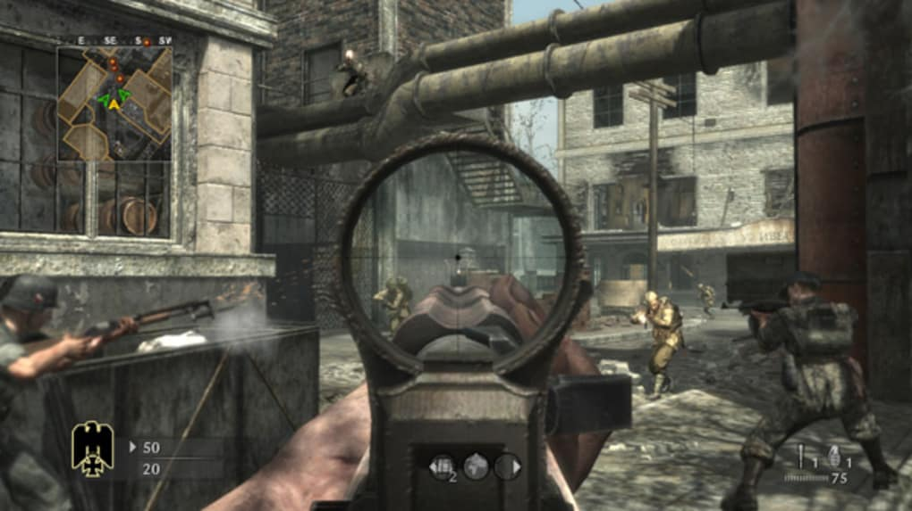
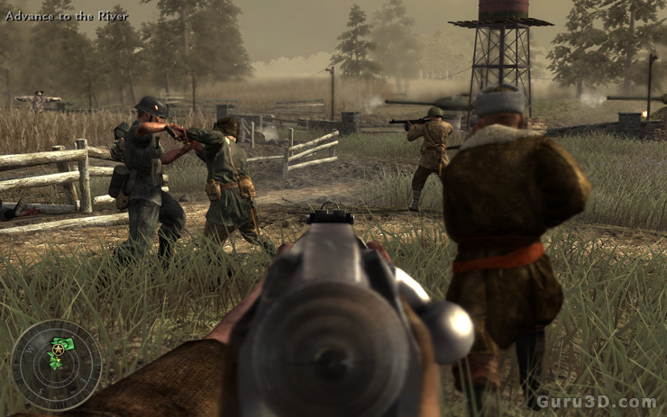
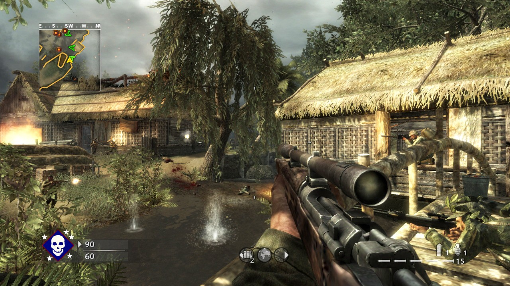

CALL OF DUTY WORLD AT WAR
General information
Call of Duty: World at War is a first-person shooter game released by Activision on November 13, 2008.
The game represents the fifth part of the Call of Duty series and was released for Windows , Mac OS X , Xbox 360 , PlayStation 3 , PlayStation 2 , Nintendo DS and Wii.
In a total of 15 single player missions you switch between the Pacific region and the European theater of war.
It is told from the perspectives of Marine Raider Private C. Miller, US Navy Petty Officer Locke and Red Army soldier Private Dimitri Petrenko, and is based on several historical battles.
Vehicles are in the form of tanks and players can control appear on certain multiplayer maps. The game also contains downloadable content called "map packs", which can be purchased online.
Players
In the game players band together to survive the most harrowing and climactic battles that led to the demise of the Axis powerson the European and Pacific fronts.
The title offers an uncensored experience with unique enemies and combat variety, including Kamikaze fighters, ambush attacks, Banzai charges and cunning cover tactics, as well as explosive on-screen action through the all new four-player cooperative campaign.
The addictive competitive multiplayer has also been enhanced with new infantry and vehicle-based action, a higher level cap and more weapons.
The co-op campaign allows players to rank up and unlock perks in competitive multiplayer by completing challenges and earning experience points, adding continuous re-playability and team-based gameplay.
After completing single player you unlock a 4 player survival mode with Nazi zombies.
Originally labeled as a "side game mode", this mode saw huge success.
Due to high demand of this new and exciting game mode three more DLC maps were added upon further progression into the games life cycle.
All versions except the Wii feature the minigame Nazi Zombies.
This is the first time Nazi Zombies ever appeared in any Call of Duty game. The mode consists of 1-4 players fighting an unlimited number of waves of Nazi zombies. Players can work together with other people to kill the zombies in a "co-op" (cooperative) mode either offline with 1-2 players or online with 2-4 players.
Inside the game
  Summary table
| Release date | November 18, 2008 |
|---|---|
| Players | Single player/Multiplayer |
| Genre | First-person Shooter |
| Publisher | Activision |
| Platforms | Microsoft Windows/PlayStation 2&3/Xbox 360/Wii/ Nintendo DS |
| Age rating | 18 + |